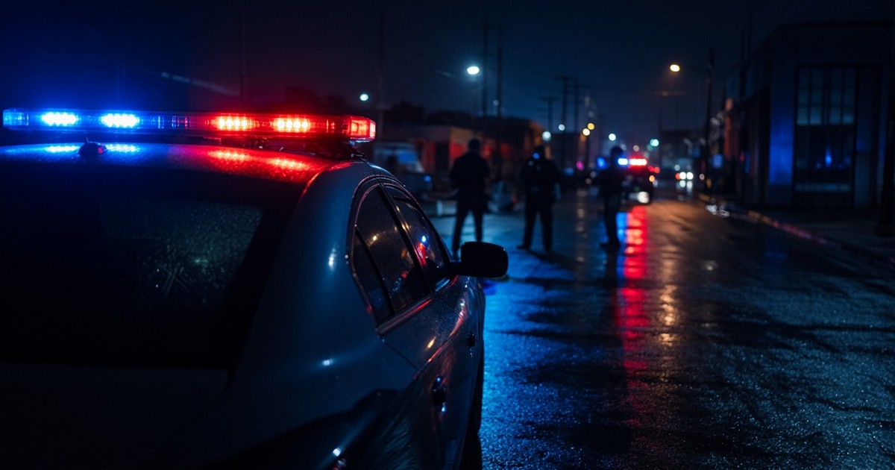
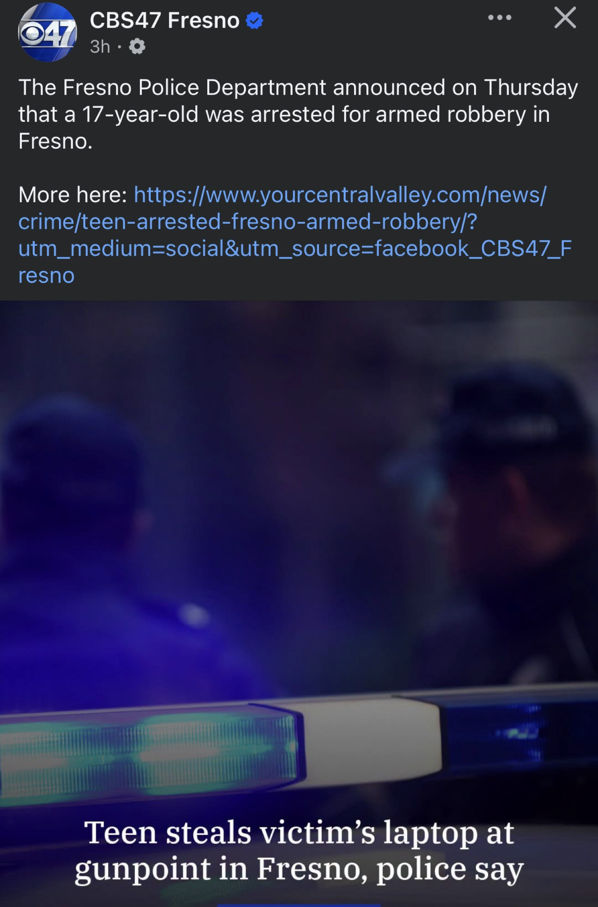
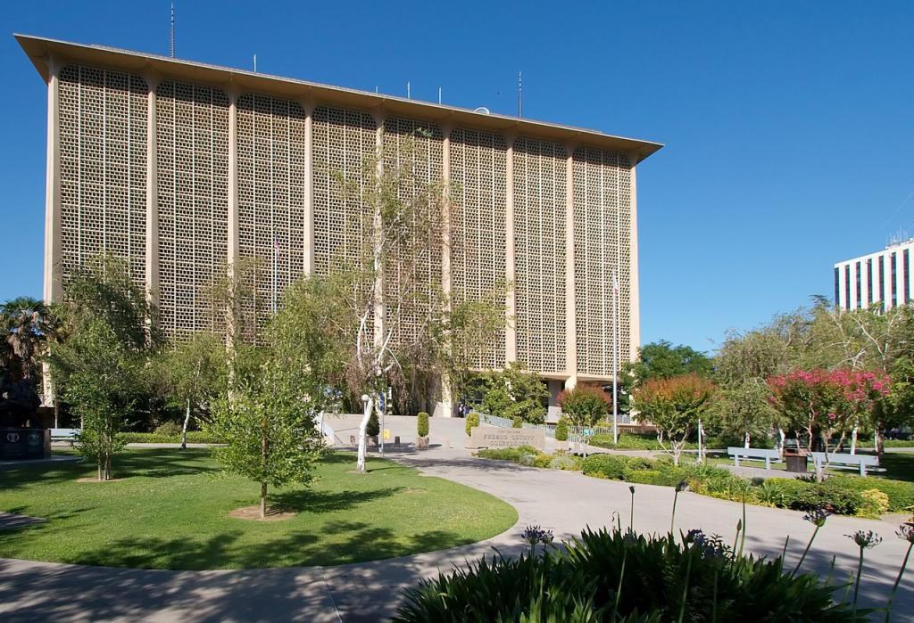
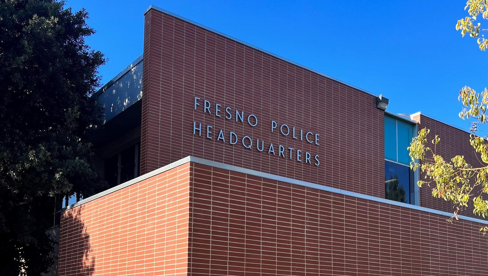

What Fresno Police said
CBS47 carried the department’s Thursday statement. On the night of August 31, around 7 p.m., officers were called to Butler Avenue and Fifth Street. A 17-year-old stranger robbed a victim at gunpoint. During the robbery the teenager racked a handgun. The victim thought a round had ejected and hit the ground. Then the teenager took the laptop and other belongings and ran west on Butler.
Police identified the robber and found him near McKinley and Chestnut. He was taken to the Juvenile Justice Campus. That is the public record as of September 10, 2026. No adult name. No charging sheet released with the press note. The fact that remains is simple. A minor pointed a working gun at a person for a computer.
When
Aug 31, 7 p.m.
Where
Butler & Fifth
Taken
Laptop, more
Held
JJC

The license they thought they had
For a stretch of years a story sold itself on the street. If you are under 18, the system will fold. Juvenile hall is a round trip. The file gets sealed. The victim learns to live with it. Carry a gun at 17 and you are still a “youth,” not a robber. That story was not law in every case. It was weather. Kids felt the weather and acted like the sky would hold.
The same weather covered another class of offender. The so-called homeless. Camp, steal, use, reset. Call it poverty and the file softens. Call it housing and the neighborhood is told to absorb it. Age on one side of the ledger. Encampment on the other. Both sold as reasons the public should eat the loss.
A laptop at gunpoint is not a housing problem. Racking a slide in a stranger’s face is not a school-discipline issue. The victim heard metal and thought a round had hit the pavement. That is the sound of a person deciding someone else’s life is cheaper than a computer.

The park changed the room
August 20, 2026. Courthouse Park, downtown, a little after 1 p.m. A senior deputy district attorney is off camera on a judicial campaign shoot. Dustin Crawford, 42, walks straight at him and stabs him in the back. Sheriff John Zanoni said the video shows the attacker picking that man out of a group. District Attorney Lisa Smittcamp said it was not a random act by a mentally ill stranger. She said it was targeted. Crawford was held on a million-dollar bond. The prosecutor lived. He was back at work by early September.
That is the hinge. A man who works cases in this county was carved on the lawn in front of the building where the cases are tried. After that, the room that used to talk in abstractions had a body on the grass. Juries live in that room. So does the District Attorney’s Office. The posture flipped. Night and day.
People who still run the old play are learning it the hard way. The teenager on Butler is one more person who acted as if the calendar year on a birth certificate was a shield. The shield is gone. The DA’s office that watched one of its own get stabbed is not the office that used to look for the soft landing. The jury pool that watched Courthouse Park on the news is not the pool that used to treat a racked slide as a cry for services.

Prop 36 is what made the turn possible
The about-face did not come from mood music. It came from a statute the voters put on the books. Proposition 36, the Homelessness, Drug Addiction, and Theft Reduction Act, passed in November 2024. Statewide it took 68 percent. In Fresno County it took 75 percent. It took effect December 18, 2024. It walked back the Prop 47 habit of treating repeat theft and certain drug cases as a shrug. It let prosecutors stack thefts, file felonies on repeat takers, and stop pretending every stolen laptop is a misdemeanor lifestyle.
That is the night-and-day difference. Before Prop 36, a DA who wanted to draw a hard line was swimming against a decade of state policy. After Prop 36, the same DA has a voter mandate and a charging tool. Courthouse Park supplied the moral shock. Prop 36 supplied the legal weather that lets the shock stick. Without the statute, the park would have been a press conference and a return to the old script. With the statute, the office can file, and a jury can convict, without the state second-guessing every count as too harsh.
This is not a claim that Prop 36 rewrote the juvenile transfer statutes by itself. It did not have to. It changed the permission structure. It told every courtroom in this county that the public already voted to end the free pass for the theft-and-encampment loop. Once that vote was law, the same public was not going to keep handing a free pass to a 17-year-old with a racked handgun. The trend ended. The people who did not get the memo are meeting the new weather in custody.
What this record is, and is not
This page does not name the 17-year-old. The department did not. It does not invent a verdict. As of the Thursday announcement he is an arrested juvenile taken to the Juvenile Justice Campus. Charging decisions after that belong to the District Attorney and the court.
What the page does say is the civic fact the District already knows. The era when age, or a tent, was treated as a license to put a gun in a stranger’s face is over in this county. Courthouse Park ended the pretense. Prop 36 is why the ending can hold.
Sources
- CBS47 / YourCentralValley, Sept. 10, 2026. “Teen steals victim’s laptop at gunpoint in Fresno, police say.” Crime date Aug. 31, Butler and Fifth, racked handgun, laptop and belongings, pickup near McKinley and Chestnut, Juvenile Justice Campus.
- ABC30, Aug. 21-22, 2026. Courthouse Park stabbing of a senior deputy district attorney. DA Lisa Smittcamp: targeted, not random. Suspect Dustin Crawford, 42. $1 million bond.
- Fresno Bee, Aug. 21, 2026. Prosecutor released from hospital. Sheriff Zanoni on the park video.
- Fresno Bee, Sept. 8, 2026. Supervisors vote to let trained DA staff carry in county buildings and Courthouse Park. Stabbed prosecutor back at work.
- GV Wire, April 29, 2025. Prop 36 passed 68 percent statewide, 75 percent in Fresno County. Effective Dec. 18, 2024. DA Smittcamp on early filings.
- California DOJ bulletin, Dec. 13, 2024. Prop 36 statutory changes on repeat theft, aggregation, and related drug offenses.
Close
Butler and Fifth is not an abstraction. A person stood there at dusk and listened to a slide rack. Ten days later the city got a Facebook card and a headline. The useful sentence is shorter than the headline.
Age is not a license. A tent is not a license. After Courthouse Park, this county stopped pretending otherwise. Prop 36 is why that stop can last.